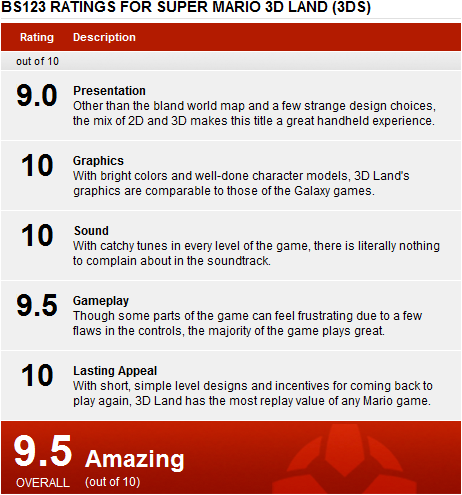

SPOILER ALERT: Post-game content discussed below.
It’s hard to define exactly what Super Mario 3D Land is. From a viewer’s standpoint, the game looks like a solid 3D Mario game, going back to the 64 days with strict emphasis on platforming and Goomba-stomping. But from a player’s standpoint, 3D Land plays quite similarly to a 2D Mario game, especially with its linear elements and the addition of the run button. So, is it a 2D Mario game or a 3D Mario game?
It doesn’t matter. Super Mario 3D Land is an amazing game.
As previously mentioned, Super Mario 3D Land combines the best of 2D Mario games and the best of 3D Mario games. The result? A wonderful game with the best of both worlds. For starters, Mario is back to his platforming roots. While much of the Galaxy games involve solving puzzles and dodging hazards, most of 3D Land is all about not falling off the ledges. Fans of Super Mario 64 will thoroughly enjoy the return of Mario’s previous fast-paced jumping physics that was significantly slowed in Mario’s latest outer space adventures.
The game really does get quite intense.
Mario’s moves have also returned from previous 3D games, along with a few new ones. Mario’s somersaults, long jumps, ground pounds, and wall kicks all make a return in 3D Land. In fact, the only move that hasn’t returned is the double and triple jump moves that Mario used to possess in his other 3D outings. A few new moves have been added as well. Mario’s backflip has been replaced with a crouch jump first seen in the original Mario Bros. arcade game. Mario also has a new roll move, which has no attack power whatsoever. However, with the roll move also comes the rolling long jump, a move similar to the long jump but only much faster. And as mentioned before, Mario now has a run button, something new to 3D Mario games, though it can sometimes get in the way due to the fact that both running and attacking use the same button.
Despite having a 360° Circle Pad, Mario’s movements are limited to 16 directions. This is both a good thing and a bad thing. The good thing is that if you want Mario go run right, he will run right, not right and a little bit downwards, and not right and a little bit upwards. This digital control really helps in several platforming sections. However, the downside of having this digital control is that you sacrifice true 360° accuracy, causing some sections to be difficult to play through, especially when you have a fixed camera that won’t budge.
Like in 2D Mario games, Mario now has a power-up system instead of a life gauge. This means that Super Mario will become little Mario if he gets hit by an enemy, and he will have to collect power-ups in order to survive more hits. Power-ups include classics like the Super Mushroom and the Fire Flower, and newer ones such as the Tanooki Suit and Boomerang Suit. The Tanooki Suit allows you to hover for a short amount of time. This is extremely useful in very careful platforming sections. The Tanooki Suit also allows you to swat enemies with your tail by pressing Y or X, turning rolling long jumps into destructive tail-wacking spinning long jumps, a useful tool when attempting to speed run through levels. The other new power-up, the Boomerang Suit, allows Mario to throw one boomerang at a time like Link does in the Zelda games. Unfortunately, other than collecting far-away items and coins, the Boomerang Suit is rather pointless due to its lack of range when trying to beat enemies with it. Though the amount of power-ups in the game are decent, it saddens me that Nintendo didn't feel the need to go all out and add even more items into the game to add variety.
Mario isn&#Array;t the only one who&#Array;s been powered up...
When it comes to levels, 3D Land’s level design is quite impressive. As mentioned before, most of the game is involved with platforming. Even the boss battles somehow involve platforming elements into them. This is a wonderful return to Mario’s roots while supplying players with the challenge of classic 3D platforming. That’s not to say that this game is difficult. Though the game looks and feels like the more linear Galaxy games, it’s fairly easy to play through the stages without too much conflict. And even when you get stuck, Nintendo was kind enough to put in a few extra power-ups to help yo
u out. Once you die five times, a white Tanooki Suit will pop up, giving players both star power and tanooki power at the same, allowing them to run through the levels. Once you die five more times, you will receive the classic P-wing, which warps you to the end of the level, allowing younger players to skip a level if they’re struggling too much on it. But skipping the level will also force the player to skip a couple of star coins, which are collectable coins hidden in every level that unlock later levels required to finish the game.
Unfortunately, the game falls short in its boss battles. Sure, the Bowser battles are absolutely brilliant and fun, but there are only two other bosses in the game, in which you fight them multiple times, just on a different stage with different hazards. This is quite a disappointment, but it was also probably the result of Nintendo trying to appeal to all audiences with this game.
The Bowser battles impress. The others? Hmmm...
Levels also use the system's gyroscope functionality at certain points of the game. For instance, if you step up to a pair of binoculars, you can zoom in and out to survey the level by moving the system around. This similar aspect is also present when players try to control canons that shoot Mario or Luigi out. These sections can also be controlled with the circle pad if one wishes to do so, but the novelty of the gyroscope functions add some variety into the game.
At first glance, the game may seem a little on the short side. With 8 worlds of 5-7 levels each (including castle and airship levels), the game is indeed a bit short. The first few worlds are also quite easy, allowing most players to zoom right through them without dying once. But upon beating the final level, 8 more special worlds appear. These worlds are remixes of previous levels in the main worlds and provide additional challenges that up the difficulty significantly (much like the additional stars in the Galaxy games). Star coins are also placed in more hard-to-reach areas, giving the game that extra challenge that it didn’t already have. Also, you will be able to play as Mario’s higher-jumping faster-running extremely-slippery brother Luigi, another element needed to complete the game 100%.
Unfortunately, Nintendo has done away with complex level maps and opted for a more straightforward linear approach. Instead of branching paths on an actual map, you travel along a line choosing which level to enter. Along the way, you will see Toad Houses and Mystery Boxes that will aid you on your adventure. Toad Houses do the same thing as they have always done in the previous games: supply Mario or Luigi with items. Mystery Boxes, on the other hand, require players to destroy every enemy until there are no more left, upon which Mario will be rewarded with a bunch of coins and a star coin. Mystery Boxes will reappear after 24 hours for players to return and gain access to more challenges and star coins, but Toad Houses, after used, will stay dormant forever. Luckily, both Toad Houses and Mystery Boxes can be revived via Streetpass, even if the other 3DS doesn’t have Super Mario 3D Land.
While the level design is truly where the game shines, Nintendo has not left a single detail out of the graphics. Everything in the game, including enemies, character models, level environments, even backgrounds, are very, very well done. In fact, the game looks so good, it even rivals the Galaxy games. And the 3D effect is truly stunning. The game does a good job in making things pop with its bright colors and clever design. Some points even require you to turn the 3D on in order to collect star coins and, sometimes, just to be able to jump on the right platforms. Along with the slider pad, the game also implements two different types of 3D views. By pressing up on the d-pad, you toggle “pop-up” 3D, which creates the effect of, shockingly, Mario elements popping out of the screen. By pressing down on the d-pad, you toggle “deep” 3D, which pushes the 3D effect down to the point where nothing pops out of the screen, but rather increases the feeling of depth of the game, as if you were looking into a box. Both 3D views are interesting to toy with, and different players will have a different preference in 3D view type.
3D is heavily emphasized in this game.
Super Mario 3D Land also has some of the catchiest soundtracks since Mario 64. Every single sound and music piece is very well done. It’s a shame that Nintendo didn’t bother to put a Sound Test mode into the game, because Mario music has never been this good. From the main overworld theme to the final Bowser boss battle, there was never a soundtrack that bothered me one bit.
If you have a 3DS and you don’t have Super Mario 3D Land yet, what are you waiting for? Very rarely do games appeal to both casual and hardcore audiences. This game is the new exception. If you want a Super Mario 64-like exploration-type experience, then you’re out of luck here. But if you want pure fun, then go out and buy this game. Everything about this game is fantastic, and the amount of replay value for the game is great. If you love Mario, then you must get this game; it won’t disappoint. If you don’t love Mario, give this one a chance, because I promise you, you will burn at least 12 hours on this game, possibly even longer. It’s a shame that multiplayer options or minigames didn’t make it in the final game, but Super Mario 3D Land doesn’t need that kind of stuff. The game is fantastic. It’s the first original must-have game for all 3DS owners.
